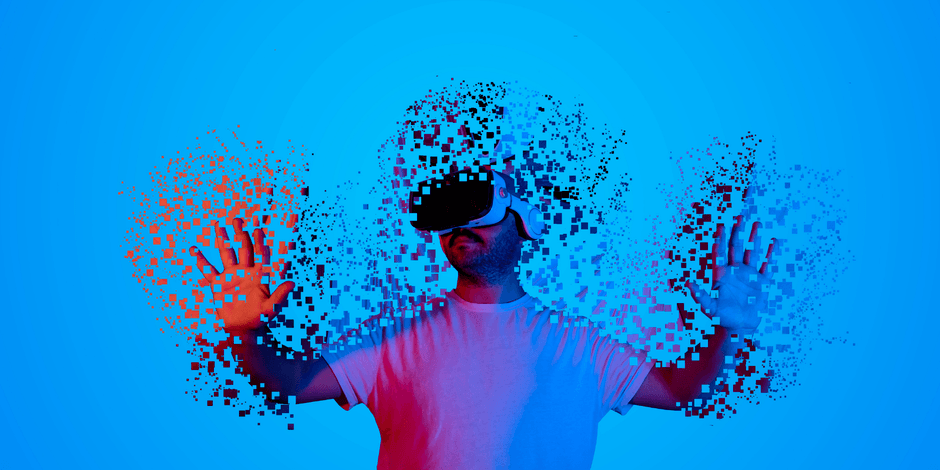
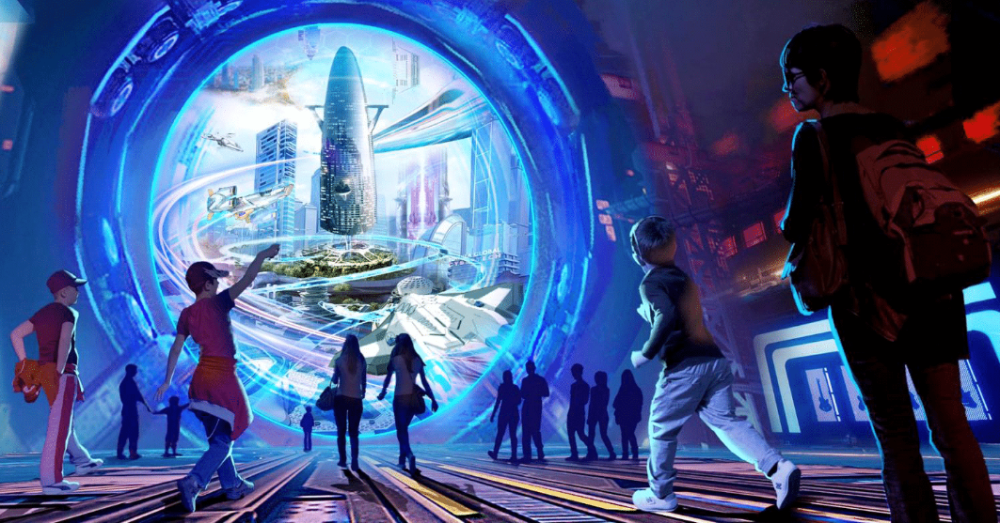
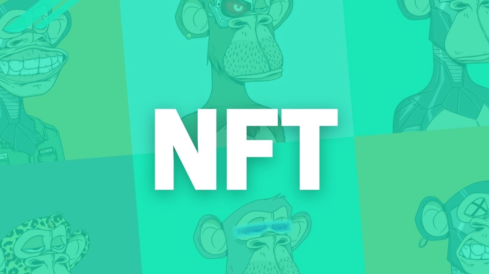

Metaverso
Diante de nossas crescentes incursões no mundo virtual e nossa maior dependência do mesmo, o metaverso propõe eliminar definitivamente as barreiras entre o real e o virtual. Portanto, um metaverso seria um ambiente onde os seres humanos poderiam interagir tanto social quanto economicamente através de avatares no ciberespaço, o que funciona como um reflexo do mundo real, mas sem suas limitações físicas.
Como Surgiu o Conceito?
O termo (e conceito) do metaverso já havia sido utilizado antes, em algumas obras de ficção, tais como o livro de ficção científica “Snow Crash”, publicado em 1992, que mostra a vida de uma pessoa comum, um entregador de pizza que assume no metaverso a identidade de um samurai.
Também surgiram projetos de games, como o Second Life, de 2003, que simula um ambiente de vida real. No entanto, embora o jogo tenha atraído milhares de gamers, não conseguiu criar uma economia digital. Depois dele, surgiram outros jogos, como Roblox, Fortnite e Minecraft, com várias características que podem viabilizar a rentabilidade – no Fortnite, por exemplo, a cantora norte-americana Ariana Grande realizou um show disponível apenas para os usuários.
No entanto, o conceito ganhou força e visibilidade com o novo posicionamento e mudança de nome do Facebook, que agora (desde outrubro de 2021) é Meta . A rede social, que investiu US$ 50 milhões neste novo segmento, informa que planeja testar universos digitais nos próximos dois anos e desenvolver aplicações de multiverso entre 2031 e 2036.

Quais as aplicações do Metaverso?
As possibilidades são inúmeras. Quem já esteve, por exemplo, em um parque temático (como a Disney ou a Universal), certamente experienciou situações semelhantes nas atrações que envolvem simuladores.
Soluções de tecnologia, tais como realidade virtual e simuladores em 3D são um exemplo de aplicação. Mas as novidades não param por aí.
Na medicina, que é um dos segmentos com maior potencial para o uso das novas tecnologias, várias possibilidades estão sendo desenvolvidas: cirurgias à distância, roupas que podem medir o nível de temperatura e transpiração do corpo humano, cursos nos quais os alunos não precisam de corpos reais para aprendizado, entre outras, são algumas das inovações.
Além disso, no universo corporativo, vários usos são possíveis, desde reuniões com interação pessoal/ virtual entre os participantes, até treinamentos mais especializados, que podem ser feitos à distância. Na indústria automotiva e na gestão de armazéns logísticos a tendência é bastante promissora.
Mas, na área de games e no universo artístico, o metaverso encontra grande força e, mais, promete boas alternativas de investimento. Nos jogos, o metaverso responde pela experiência mersiva, mas os itens necessários para os games (armas, ferramentas, vestimentas, entre outros) são tokens não-fungíveis (NFTs), cujo valor disparou nos últimos meses. Um exemplo disso são os tokens GALA, que em 2021 teve alta de mais de 45.000%, o The Sandbox (SAND), com 16.355%, e o Axie Infinity (AXS), com 16.249%.
No ambiente artístico, os NFTs também se destacaram, especialmente pelo fato de garantirem a autenticidade das obras e a exclusividade da propriedade. Para os artistas, isso representa uma grande revolução, uma vez que não é mais necessário ter um intermediário para a comercialização de suas obras.
O que são NFT's?
Os tokens não fungíveis e o metaverso estão intimamente ligados. Para entender melhor o conceito, é preciso compreender o que é uma coisa “fungível” – ou seja, que se mistura. Uma cédula de dinheiro físico de um determinado valor pode ser trocada por outra igual, de mesmo valor, assim como 1 bitcoin pode ser trocado por outra unidade de bitcoin, de igual valor. No entanto, quando se trata de um item “não fungível”, essa troca não tem correspondência. Ou seja, o item é único.
É o que acontece no caso do token não fungível (NFT). Um smart contract garante sua autenticidade e exclusividade, o que assegura que não existe outro igual.
Por isso, quando um usuário adquire um NFT de um game, ele se torna o único proprietário dele – o que aumenta o seu valor na comunidade de jogadores. Da mesma maneira, quem tem uma obra artística em NFT, adquire a propriedade da produção original.
São as NFTs que garantem a autenticidade das compras e transações no metaverso. Por exemplo, um segmento promissor é a comercialização de imóveis no metaverso. Pode parecer uma coisa pouco concreta, mas terrenos no metaverso estão se valorizando e podem ser utilizados em aplicações para ganhar dinheiro no mundo real. O setor já movimenta mais de US$ 100 milhões por semana.
Se você está se questionando para que serve um terreno no metaverso, vale explicar: além de terras em jogos, é possível construir espaços para eventos virtuais, locais para venda dos mais variados itens e até órgãos públicos, para atendimento virtual. O proprietário do terreno virtual pode lucrar com o aluguel ou a venda das áreas, tal qual no mercado imobiliário convencional. E os NFTs são o que garantem que os contratos são autênticos.
